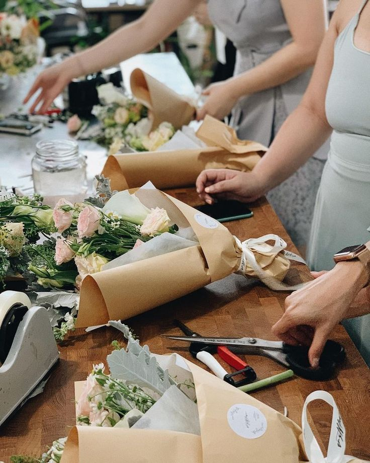
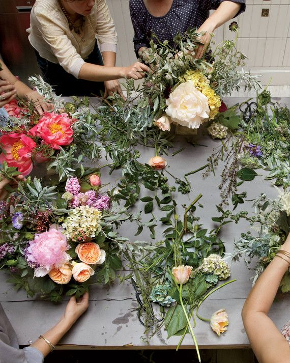
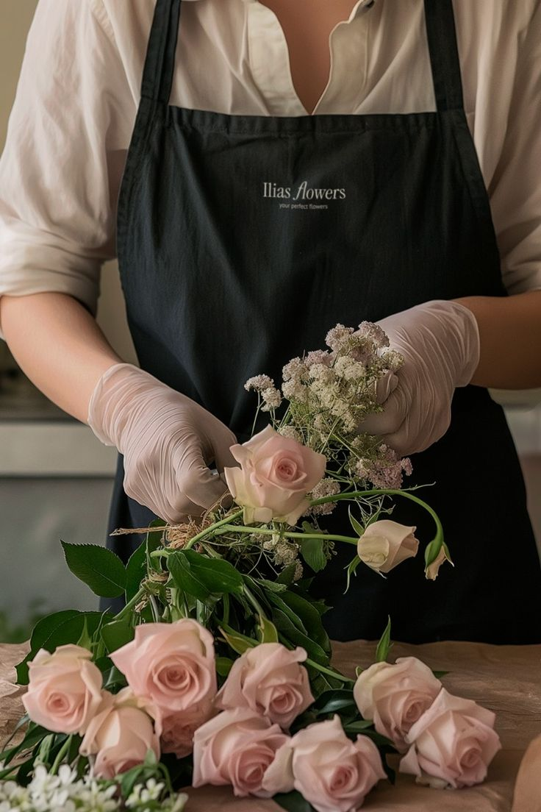
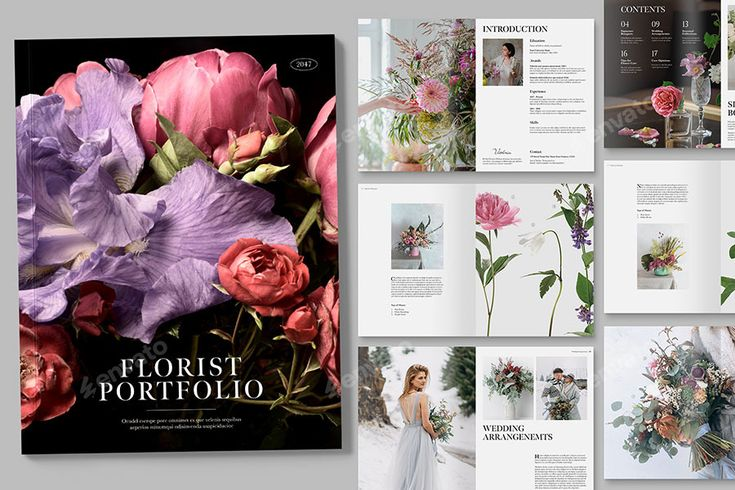
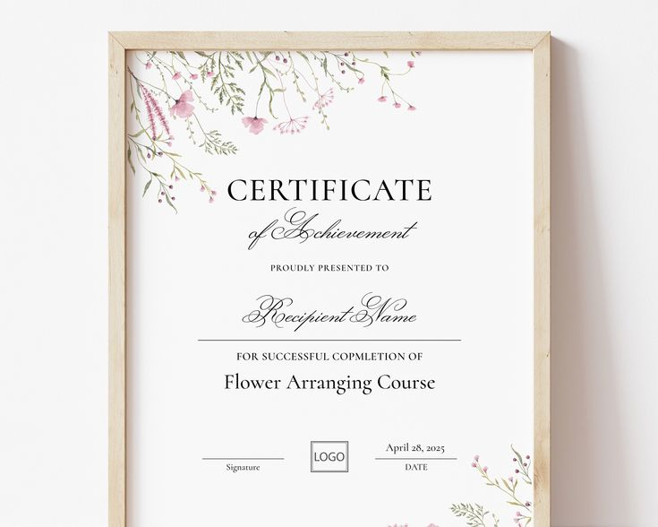
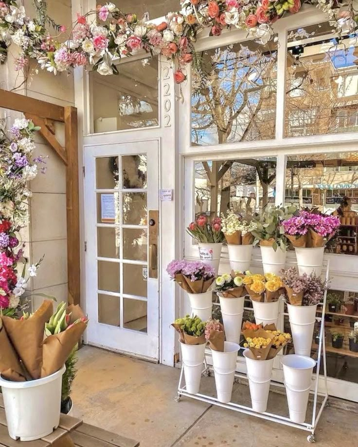

Get Hands-On Experience
Volunteer or intern at a local florist shop to gain practical, real-world experience.

Take Floral Design Classes
Enroll in floral design courses offered by community colleges or specialized floral schools.

Practice and Develop Your Style
Regularly practice making flower arrangements at home. Experiment with different flowers, colors, and styles to discover your unique design approach.

Build Portfolio
As you gain experience, photograph your best arrangements and compile them into a professional portfolio.

Consider Certification or Formal Training
Earning a floristry certificate or completing a formal training program can boost your credentials and deepen your knowledge.

Start Your Own Business
If you have business skills and resources, consider starting your own florist business.